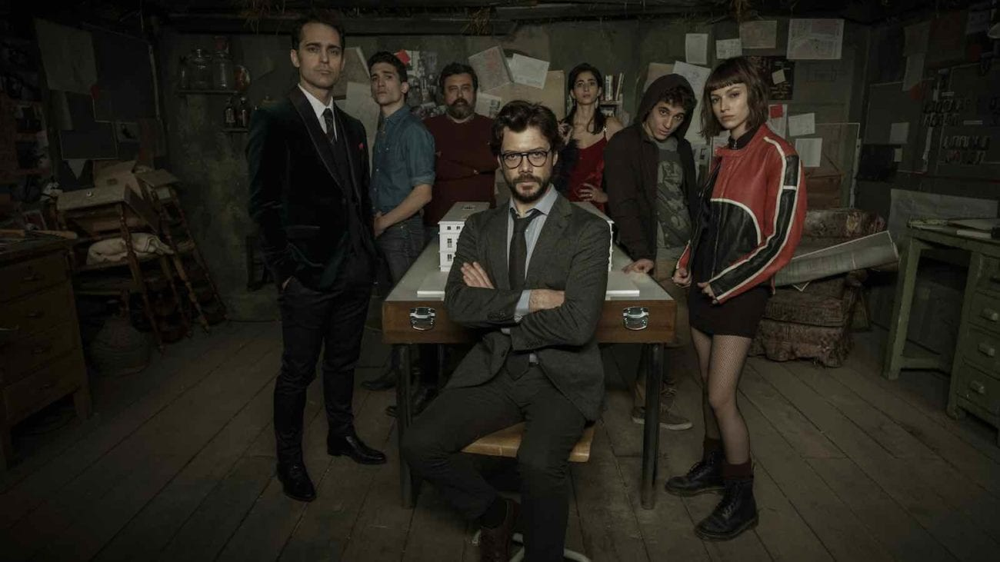

About The Professor
The Professor is of average height, with somewhat curly, medium-long and dark hair. He has brown eyes, as well as a beard and glasses. He is usually seen sporting a brown-greyish suit along with a black tie and white shirt.
The Professor and his partners
More about Him
- The Professor was the mastermind behind the heist.
- He controlled the entirety of the heist from behind the scenes.
- He is, however, a "prankster" so to speak, embarrassing Inspector Raquel by asking embarrassing questions.
His partners
The professor has several partners. I think he trusted Berlin the most. Click on the links below to read more about them: